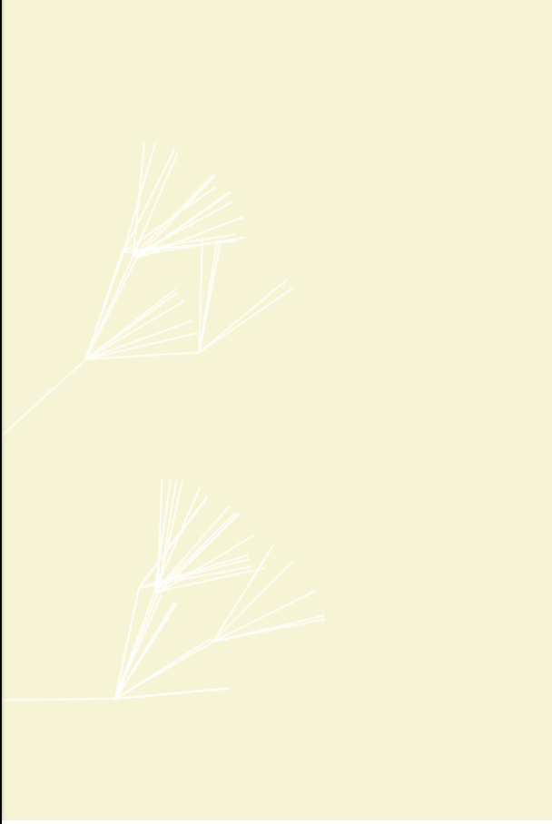

Growing

vue3实验性语法体验
vue3 实验性语法体验
响应性语法糖目前是一个实验性功能，默认是禁用的，需要显式选择使用。在最终确定前仍可能发生变化，你可以查看 GitHub 上的提案与讨论来关注和跟进最新进展。
$ $ref $computed
顺便尝试了windiCss 还可以吧,就是要记类名~
使用ts+vue3的实验性语法用canvas画一个线
<div
class="content px-1px border-1px border-dark-800 box-border text-center text-2px w-200px h-200px mx-auto my-100px shadow-2xl cursor-text"
>
还好吧,不太好记~
<canvas ref="canvasEl" width="200" height="200"></canvas>
</div>
ref定义的变量要到处使用 .value 无疑是很繁琐的，并且在没有类型系统的帮助时很容易漏掉。 试试vue3的实验性语法
import { onMounted, ref } from 'vue';
import { $, $ref, $computed } from 'vue/macros';
const canvasEl = $ref<HTMLCanvasElement>();
function foo() {
return ref('wuyupei');
}
let a = $(foo());
console.log(a);
let ctx = $computed(() => canvasEl.getContext('2d')!);
function init() {
ctx.strokeStyle = 'red';
ctx.beginPath();
ctx.moveTo(10, 10);
ctx.lineTo(10, 60);
ctx.closePath();
ctx.stroke();
}
onMounted(() => {
init();
});

 模拟Elelemt组件库的实现
模拟Elelemt组件库的实现